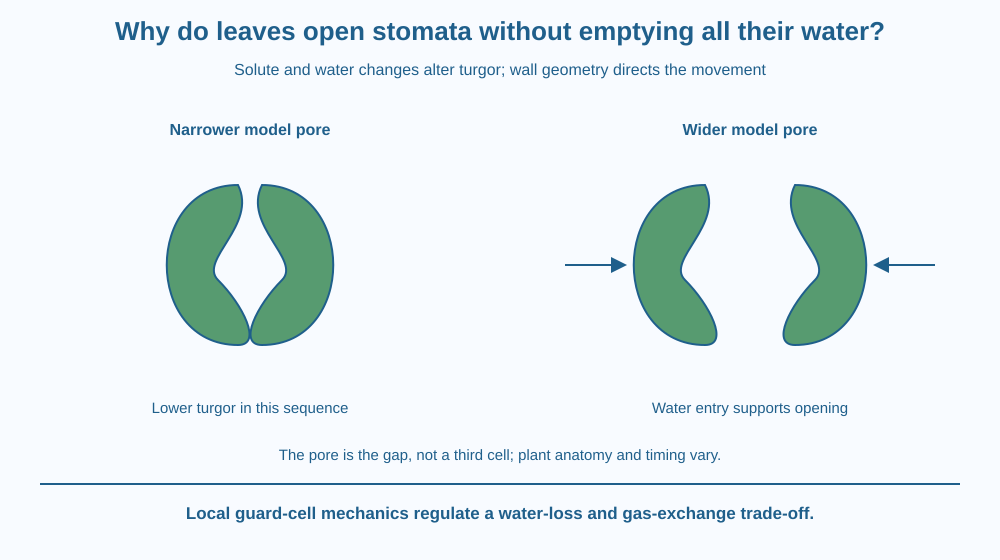

Explain how changes in guard-cell turgor regulate a stomatal pore. Connect solute movement, water entry and cell-wall geometry with opening and closing. Distinguish this local valve mechanism from the broader movement of water through forests or the transport of sugar through phloem.
A leaf needs gas exchange, but an open surface pathway also permits water vapour to leave. The plant cannot solve the trade-off by treating every pore as permanently wide open or permanently sealed.
Two specialised cells surround a stoma and change its opening. They do not pull a mechanical handle. Changes inside the cells alter their pressure and shape, while the walls constrain how that shape changes.
The useful question is how a living cell can turn a water-content change into controlled movement at a small opening.
A stoma is a pore in the plant surface, and stomata is the plural. Guard cells border the opening and contribute to regulating exchange between internal air spaces and the surroundings.
In the familiar kidney-shaped guard-cell model, walls and cellulose arrangement constrain expansion unequally. The inner region next to the pore differs mechanically from other parts. As turgor changes, the cells bend in a way that changes the gap.
Solutes, including potassium ions and other substances, can accumulate during opening responses. Their movement changes water relations, encouraging water entry. Increased internal water pressure against the wall is called turgor.
Greater turgor in the appropriate guard-cell arrangement promotes opening. Loss or redistribution of solutes and water can reduce turgor and support closure. The mechanism is more specific than saying the whole leaf swells at random.
The shape model is not identical for every plant. Grasses often have differently shaped guard cells and associated structures. The general idea of controlled cell mechanics remains useful, while one kidney-shaped cartoon should not be declared universal anatomy.
Opening allows carbon dioxide access and also affects water-vapour loss. The appropriate aperture depends on conditions and the plant's needs. Light, internal carbon dioxide, water status and other signals can influence responses without requiring one permanent opening schedule for all species.
Some plants use distinctive day-night patterns, so always open by day and closed by night is too absolute. The lesson focuses on the actuator mechanism rather than repeating the earlier broad hormone-control topic or detailing every signalling pathway.
A leaf's water loss also depends on humidity, airflow and other surfaces. Stomatal movement is one important control, not the only factor. A closed pore does not make every possible water-loss route vanish, nor does a wider pore automatically indicate a healthier plant.
Draw two curved flexible cells surrounding a gap. Mark constrained wall regions differently from more expandable ones. Add solute symbols, then water-entry arrows and higher-turgor labels.
Redraw the shapes with a wider gap in the opening model. In a second sequence, remove some internal water and reduce the opening. The wall geometry converts pressure change into a directional movement.
Keep the pore separate from the cells. The opening is a space whose size changes; it is not a third cell filling with water. This small distinction makes the diagram clearer and prevents a common confusion between the valve's parts and the passage it controls.
The SVG compares a smaller and larger stomatal aperture in the kidney-shaped model. Guard cells flank the pore, and separate arrows show solute-related water entry and the resulting turgor change.
Labels identify the constrained inner wall and the open space. A caption notes that guard-cell anatomy varies among plants and that the diagram is not a universal day-night timetable.
The illustration does not show forest rainfall production or phloem sap transport. It isolates local pore regulation so the same word water does not conceal different biological mechanisms.

Plant water management in Indian gardens and farms depends on both plant responses and environmental conditions. A wilting or green appearance alone does not reveal the exact aperture of every stoma.
A suitable microscope image can show pores, but interpreting a static picture requires care. Preparation and conditions can influence what is seen, so one image should not be treated as a complete record of the leaf's daily behaviour.
The home activity needs no leaf peeling, chemical stain or microscope purchase. A paper model can explain the mechanical chain without damaging a plant or handling unfamiliar materials.
Use paper, a pencil and two colours.
Label the drawing a common model rather than every species' exact anatomy. Ask a partner to identify which marks are cells and which region is the pore. Do not claim the symbol count measures real ion concentration or opening speed.
Why does wall geometry matter if both cells receive water? Explain why a pressure change alone does not specify the direction of deformation without structural constraints.
Now consider dry moving air outside an open pore. Which part of water loss is controlled by the guard cells and which part depends on surroundings? A useful explanation includes both the biological control and the external driving conditions.
What is the stoma in the guard-cell model?
Answer: C — The stoma is the opening whose aperture the guard cells regulate.
Why can water entry promote opening in the common model?
Answer: B — Pressure and wall geometry together change the gap between the cells.
A diagram claims all plants have identical guard-cell shape and daily timing. What needs correction?
Answer: A — The common kidney-shaped explanation is useful without being universal in every detail.
Create a cause-chain diagram linking solute change, water movement, turgor, cell shape and pore aperture. Keep the cell and empty opening labels distinct.
Add one anatomical variation and one environmental limitation. Your explanation must avoid treating the pore as a water-filled cell or claiming every species follows an identical daily timetable. The challenge is a specific local mechanism, not a generic instruction to observe a leaf.
A living valve can work by changing the pressure inside its bordering cells. The useful movement emerges from water relations combined with wall architecture. Neither a list of ions nor a cell-outline drawing alone explains the whole actuator; their connection produces the function.
Guard cells convert solute-related water and turgor changes into pore movement through their wall geometry, regulating a gas-exchange and water-loss trade-off.